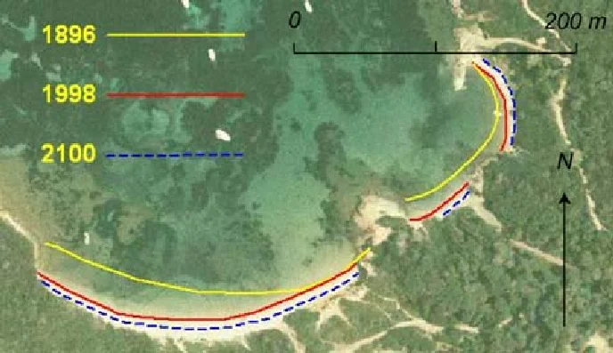

About SHORECAST
Sandy beaches, covering about one-third of the global ice-free coastline, provide vital recreational, tourism, and ecosystem services while serving as buffers against flooding. Recent analysis of satellite-derived shoreline changes has revealed that a quarter of the world's sandy beaches are eroding [1]. This will worsen with climate change with nearly half of sandy beaches projected to be at risk of extinction by the century's end [2]. Yet, predicting this evolution remains a challenge:- Many interacting nonlinear natural processes across various time (hours to centuries) and spatial scales (meters to hundreds of kilometres)
- Future coastal retreat projections are highly uncertain due to intrinsic and knowledge uncertainties
SHORECAST aims to create a robust and fast hybrid modeling approach to predict shoreline evolution of sandy beaches, considering climate change and dynamic coastal management strategies across various settings and scales (local to regional, year to century). The key objectives are to:
- Develop a metamodeling approach for fast prediction of 2D (in space) wave conditions at breaking from offshore waves and 2D bathymetry
- Extend mono-source 1D (in space) data assimilation methods to multi-source (in-situ and satellite) 2D data assimilation in shoreline models, by exploring model parameter dependencies on local and remote conditions
- Support the transition from models that neglect coastal management actions to those that include dynamic adaptation measures
- Assess how the cascade of uncertainties affect shoreline predictions over time.
Upcoming events
2026-07
Plenary
2026-09
Informal Internal webinar
2026-10
Internal board
2026-11
Informal Internal webinar
2027-01
External Comitee